Gene set testing for Illumina HumanMethylation Arrays
Evaluating the performance of different methods
Jovana Maksimovic, Alicia Oshlack and Belinda Phipson
April 06, 2021
Last updated: 2021-04-06
Checks: 7 0
Knit directory: methyl-geneset-testing/
This reproducible R Markdown analysis was created with workflowr (version 1.6.2). The Checks tab describes the reproducibility checks that were applied when the results were created. The Past versions tab lists the development history.
Great! Since the R Markdown file has been committed to the Git repository, you know the exact version of the code that produced these results.
Great job! The global environment was empty. Objects defined in the global environment can affect the analysis in your R Markdown file in unknown ways. For reproduciblity it's best to always run the code in an empty environment.
The command set.seed(20200302) was run prior to running the code in the R Markdown file. Setting a seed ensures that any results that rely on randomness, e.g. subsampling or permutations, are reproducible.
Great job! Recording the operating system, R version, and package versions is critical for reproducibility.
Nice! There were no cached chunks for this analysis, so you can be confident that you successfully produced the results during this run.
Great job! Using relative paths to the files within your workflowr project makes it easier to run your code on other machines.
Great! You are using Git for version control. Tracking code development and connecting the code version to the results is critical for reproducibility.
The results in this page were generated with repository version 58c95d6. See the Past versions tab to see a history of the changes made to the R Markdown and HTML files.
Note that you need to be careful to ensure that all relevant files for the analysis have been committed to Git prior to generating the results (you can use wflow_publish or wflow_git_commit). workflowr only checks the R Markdown file, but you know if there are other scripts or data files that it depends on. Below is the status of the Git repository when the results were generated:
Ignored files:
Ignored: .DS_Store
Ignored: .Rhistory
Ignored: .Rproj.user/
Ignored: analysis/figures.nb.html
Ignored: code/.DS_Store
Ignored: code/.Rhistory
Ignored: code/.job/
Ignored: code/old/
Ignored: data/.DS_Store
Ignored: data/annotations/
Ignored: data/cache-intermediates/
Ignored: data/cache-region/
Ignored: data/cache-rnaseq/
Ignored: data/cache-runtime/
Ignored: data/datasets/.DS_Store
Ignored: data/datasets/GSE110554-data.RData
Ignored: data/datasets/GSE120854/
Ignored: data/datasets/GSE120854_RAW.tar
Ignored: data/datasets/GSE135446-data.RData
Ignored: data/datasets/GSE135446/
Ignored: data/datasets/GSE135446_RAW.tar
Ignored: data/datasets/GSE45459-data.RData
Ignored: data/datasets/GSE45459_Matrix_signal_intensities.txt
Ignored: data/datasets/GSE45460/
Ignored: data/datasets/GSE45460_RAW.tar
Ignored: data/datasets/GSE95460_RAW.tar
Ignored: data/datasets/GSE95460_RAW/
Ignored: data/datasets/GSE95462-data.RData
Ignored: data/datasets/GSE95462/
Ignored: data/datasets/GSE95462_RAW/
Ignored: data/datasets/SRP100803/
Ignored: data/datasets/SRP125125/.DS_Store
Ignored: data/datasets/SRP125125/SRR6298*/
Ignored: data/datasets/SRP125125/SRR_Acc_List.txt
Ignored: data/datasets/SRP125125/SRR_Acc_List_Full.txt
Ignored: data/datasets/SRP125125/SraRunTable.txt
Ignored: data/datasets/SRP125125/multiqc_data/
Ignored: data/datasets/SRP125125/multiqc_report.html
Ignored: data/datasets/SRP125125/quants/
Ignored: data/datasets/SRP166862/
Ignored: data/datasets/SRP217468/
Ignored: data/datasets/TCGA.BRCA.rds
Ignored: data/datasets/TCGA.KIRC.rds
Ignored: data/misc/
Ignored: output/.DS_Store
Ignored: output/FDR-analysis/
Ignored: output/compare-methods/
Ignored: output/figures/
Ignored: output/methylgsa-params/
Ignored: output/outputs.tar.gz
Ignored: output/random-cpg-sims/
Ignored: output/test/
Unstaged changes:
Modified: analysis/05_compareMethods.Rmd
Note that any generated files, e.g. HTML, png, CSS, etc., are not included in this status report because it is ok for generated content to have uncommitted changes.
These are the previous versions of the repository in which changes were made to the R Markdown (analysis/05_compareMethodsBcells.Rmd) and HTML (docs/05_compareMethodsBcells.html) files. If you've configured a remote Git repository (see ?wflow_git_remote), click on the hyperlinks in the table below to view the files as they were in that past version.
| File | Version | Author | Date | Message |
|---|---|---|---|---|
| Rmd | 58c95d6 | JovMaksimovic | 2021-04-06 | wflow_publish(c("analysis/index.Rmd", "analysis/04_expressionGenesetsBcells.Rmd", |
| html | 9029ba4 | Jovana Maksimovic | 2021-04-02 | Build site. |
| Rmd | c62fb2c | Jovana Maksimovic | 2021-04-02 | wflow_publish("analysis/05_compareMethodsBcells.Rmd") |
| Rmd | 18ac8e3 | Jovana Maksimovic | 2021-04-02 | Methods comparison using B-cell development data. |
| Rmd | 73c6790 | JovMaksimovic | 2021-04-02 | Analysis of B-cell data |
library(here)
library(minfi)
library(paletteer)
library(limma)
library(BiocParallel)
library(reshape2)
library(gridExtra)
library(missMethyl)
library(ggplot2)
library(glue)
library(grid)
library(tidyverse)
library(rbin)
library(patchwork)
library(ChAMPdata)
library(lemon)
source(here("code/utility.R"))Load data
We are using publicly available EPIC data GSE45459 generated from developing human B-cells. The data is normalised and filtered (bad probes, multi-mapping probes, SNP probes, sex chromosomes).
# load data
dataFile <- here("data/datasets/GSE45459-data.RData")
if(file.exists(dataFile)){
# load processed data and sample information
load(dataFile)
} else {
raw <- read.delim(here("data/datasets/GSE45459_Matrix_signal_intensities.txt"),
row.names = "ID_REF")
M <- raw[,grepl("Methylated", colnames(raw))]
U <- raw[,grepl("Unmethylated", colnames(raw))]
detP <- raw[,grepl("Pval", colnames(raw))]
targets <- as.data.frame(strsplit2(colnames(detP),"_")[,1:2])
colnames(targets) <- c("ID","Stage")
mSet <- MethylSet(Meth = as.matrix(M), Unmeth = as.matrix(U),
annotation = c(array = "IlluminaHumanMethylation450k",
annotation = "ilmn12.hg19"))
colnames(mSet) <- targets$ID
grRaw <- minfi::mapToGenome(mSet)
#normalise
normGr <- preprocessQuantile(grRaw)
#filter
fltGr <- filterQual(normGr = normGr, detP = detP)
fltGr <- filterProbes(fltGr)
save(detP, normGr, fltGr, targets, file = dataFile)
}QC plots
# plot mean detection p-values across all samples
dat <- tibble::tibble(mean = colMeans(detP), group = targets$Stage,
sample = targets$ID)
ggplot(dat, aes(y = mean, x = sample, fill = group)) +
geom_bar(stat = "identity") +
labs(fill = "Stage",
x = "Sample",
y = "Mean detection p-value") +
theme(axis.text.x = element_text(angle = 90, vjust = 0.5))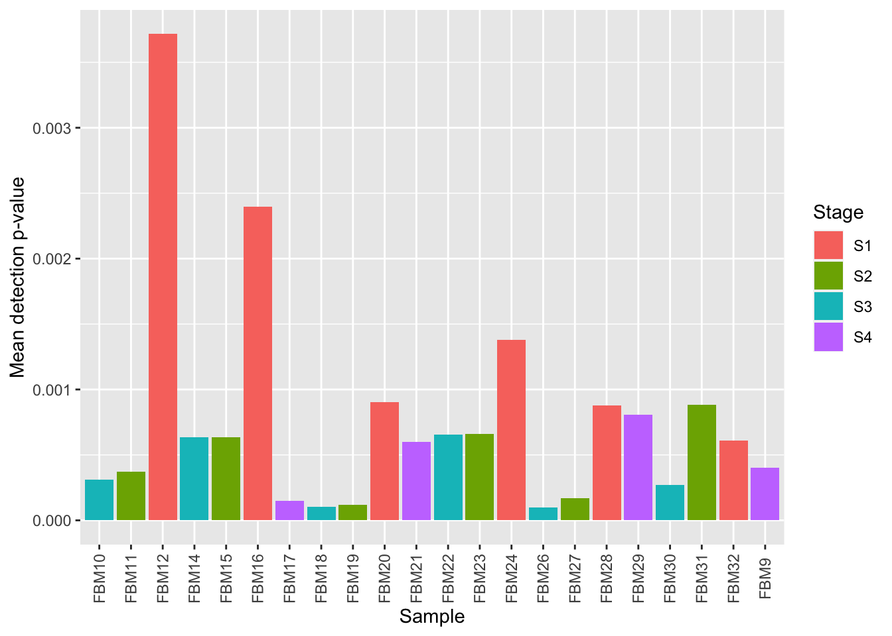
| Version | Author | Date |
|---|---|---|
| 9029ba4 | Jovana Maksimovic | 2021-04-02 |
# plot normalised beta value distribution
bVals <- getBeta(fltGr)
dat <- as_tibble(reshape2::melt(bVals))
colnames(dat) <- c("cpg", "ID", "beta")
dat$group <- rep(targets$Stage, each = nrow(bVals))
p <- ggplot(dat, aes(x = beta, colour = group, group = ID)) +
geom_density(size=0.5, alpha=0.5) +
labs(color = "Stage", x = "Beta value", y = "Density")
p 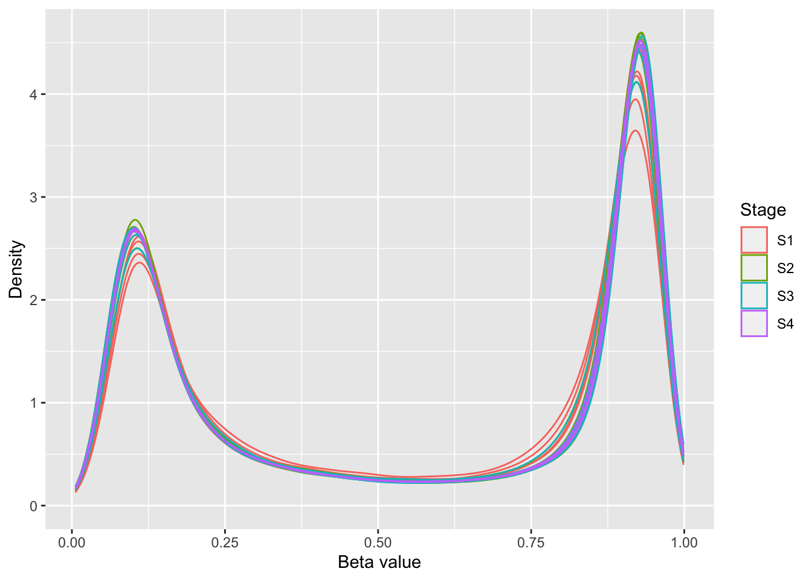
| Version | Author | Date |
|---|---|---|
| 9029ba4 | Jovana Maksimovic | 2021-04-02 |
dims <- list(c(1,2), c(1,3), c(2,3), c(3,4))
p <- vector("list", length(dims))
for(i in 1:length(dims)){
tmp <- plotMDS(getM(fltGr), top=1000,
gene.selection="common", plot = FALSE,
dim.plot = dims[[i]])
dat <- data.frame(x = tmp$x, y = tmp$y, group = targets$Stage)
p[[i]] <- ggplot(dat, aes(x = x, y = y, colour = group)) +
geom_point() +
labs(colour = "Stage", x = glue("PC {tmp$dim.plot[1]}"),
y = glue("PC {tmp$dim.plot[2]}"))
}
(p[[1]] | p[[2]]) / (p[[3]] | p[[4]]) + plot_layout(guides = "collect")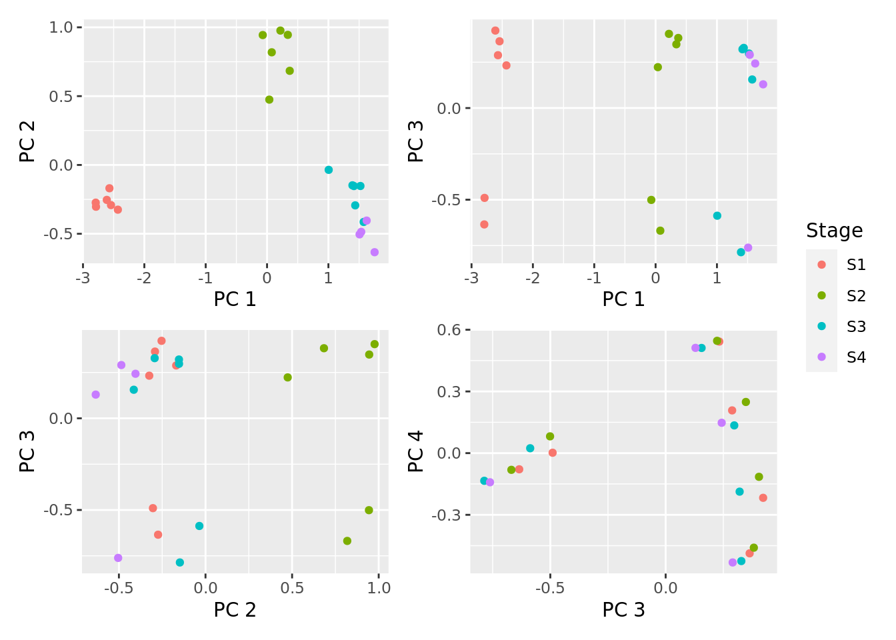
| Version | Author | Date |
|---|---|---|
| 9029ba4 | Jovana Maksimovic | 2021-04-02 |
Save figure for use in manuscript.
outDir <- here::here("output/figures")
if (!dir.exists(outDir)) dir.create(outDir)
fig <- here("output/figures/Fig-4A.rds")
saveRDS(p, fig, compress = FALSE)Statistical analysis
Compare several sets of sorted immune cells. Consider results significant at FDR < 0.05 and delta beta > 10% (~ lfc = 0.5).
mVals <- getM(fltGr)
bVals <- getBeta(fltGr)Stage <- factor(targets$Stage)
design <- model.matrix(~0+Stage)
fit <- lmFit(mVals, design)
cont.matrix <- makeContrasts(S1vS2=StageS1-StageS2,
S2vS3=StageS2-StageS3,
levels=design)
fit2 <- contrasts.fit(fit, cont.matrix)
fit2 <- eBayes(fit2, robust=TRUE, trend=TRUE)
tfit <- treat(fit2, lfc = 0.5)
pval <- 0.05
fitSum <- summary(decideTests(tfit, p.value = pval))
fitSum S1vS2 S2vS3
Down 1083 0
NotSig 366973 369336
Up 2065 785bDat <- getBiasDat(rownames(topTreat(tfit, coef = 1, num = 5000,
p.value = 0.05)),
array.type = "450K")All input CpGs are used for testing.p <- ggplot(bDat, aes(x = avgbias, y = propDM)) +
geom_point(shape = 1, size = 2) +
geom_smooth() +
labs(x = "No. CpGs per gene (binned)",
y = "Prop. differential methylation") +
theme_minimal() +
theme(panel.grid = element_blank(),
axis.line = element_line(colour = "black"))
p`geom_smooth()` using method = 'loess' and formula 'y ~ x'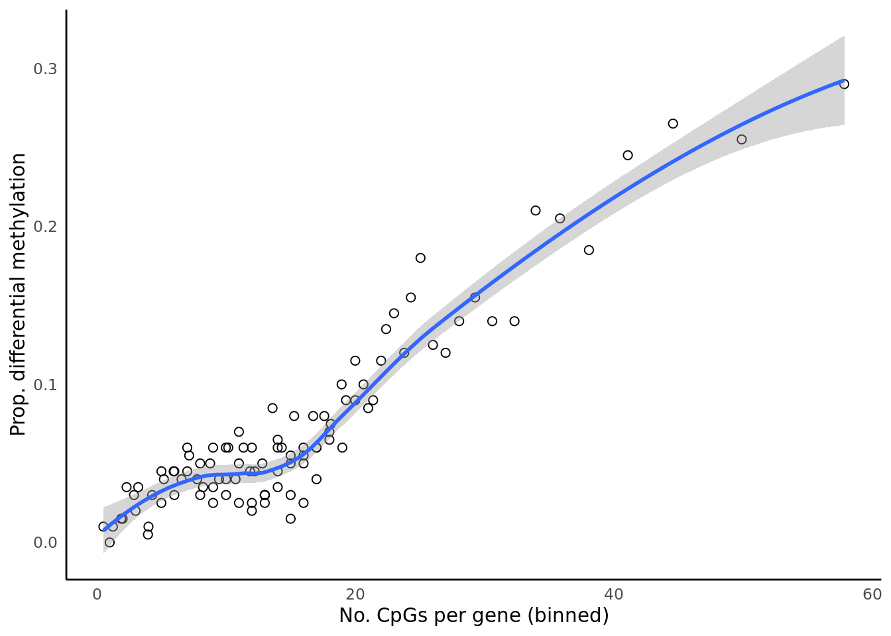
| Version | Author | Date |
|---|---|---|
| 9029ba4 | Jovana Maksimovic | 2021-04-02 |
Save figure for use in manuscript.
fig <- here("output/figures/Fig-1B.rds")
saveRDS(p, fig, compress = FALSE)Examine only the independent contrasts.
dat <- reshape2::melt(fitSum[rownames(fitSum) != "NotSig", ])
colnames(dat) <- c("dir","comp","num")
p <- ggplot(dat, aes(x = comp, y = num, fill = dir)) +
geom_bar(stat = "identity", position = "dodge") +
labs(x = "Comparison", y = "No. DM CpGs (FDR < 0.05)", fill = "Direction") +
scale_fill_brewer(palette = "Set1", direction = -1)
p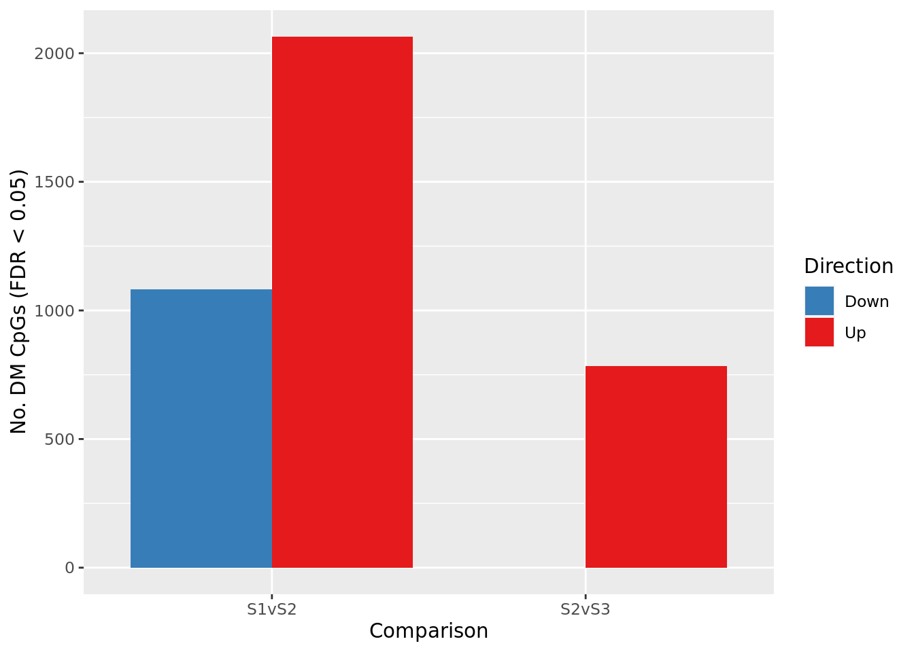
| Version | Author | Date |
|---|---|---|
| 9029ba4 | Jovana Maksimovic | 2021-04-02 |
Save figure for use in manuscript.
fig <- here("output/figures/Fig-4B.rds")
saveRDS(p, fig, compress = FALSE)Compare performance of different gene set testing methods
We compare the performance of the following gene set testing methods available for methylation arrays: a standard hypergeometric test (HGT), GOmeth from the missMethyl package, methylglm (mGLM), methylRRA-ORA (mRRA (ORA)) and methylRRA-GSEA (mRRA (GSEA)) from the methylGSA package and ebayGSEA from the ChAMP package.
We perform gene set testing on the results of all three blood cell type comparisons: B-cells vs. NK cells, CD4 T-cells vs. CD8 T-cells and monocytes vs. neutrophils, using all of the different gene set testing methods.
Gene set testing is performed for each comparison using GO categories, KEGG pathways and the BROAD MSigDB gene sets for the following methods: HGT, GOmeth, mGLM, mRRA (ORA) and mRRA (GSEA)
As gene set testing can only be performed using the BROAD MSigDB gene sets provided with the ChAMP package, the ebayGSEA method is only tested using the BROAD MSigDB gene sets for the three blood cell comparisons.
Furthermore, as the methylGSA methods do not work well with sets that only contain very few genes or very many genes, we only test sets with at least 5 genes and at most 5000 genes.
Firstly, the results of the statistical analysis of the three blood cell comparisons are saved as an RDS object.
minsize <- 5
maxsize <- 5000
outDir <- here::here("data/cache-intermediates/BCELLS")
if (!dir.exists(outDir)) dir.create(outDir)
outFile <- here("data/cache-intermediates/bcells.contrasts.rds")
if(!file.exists(outFile)){
obj <- NULL
obj$tfit <- tfit
obj$maxsize <- maxsize
obj$minsize <- minsize
obj$mVals <- mVals
obj$targets <- targets
saveRDS(obj, file = outFile)
} As some of the methods take a considerable amount of time to perform the gene set testing analysis, we have created several scripts in order to run the analyses in parallel on a HPC. The code used to run all the gene set testing analyses using the different methods can be found in the code/compare-methods directory. It consists of four scripts: genRunMethodJob.R, runChAMP.R, runMethylGSA.R and runMissMethyl.R. The genRunMethodJob.R script creates and submits Slurm job scripts that run the runChAMP.R, runMethylGSA.R and runMissMethyl.R scripts, for each gene set type, in parallel, on a HPC. The results of each job are saved as an RDS file named {package}.{set}.rds in the output/compare-methods directory. Once all analysis jobs are complete, all of the suvbsequent analyses in this document can be executed.
Load output for all methods
The results of all the gene set testing analyses, using all the different methods, for the different types of gene sets, are loaded into a list of data.frames. All of the data.frames in the list are then concatenated into a tibble for downstream analysis and plotting.
inFiles <- list.files(here("output/compare-methods/BCELLS"), pattern = "rds",
full.names = TRUE)
res <- lapply(inFiles, function(file){
readRDS(file)
})
dat <- as_tibble(dplyr::bind_rows(res))Explore analysis results
GO categories
Examine the performance of the different methods when gene set testing was performed on GO categories.
ann <- loadAnnotation("450k")
flatAnn <- loadFlatAnnotation(ann)
cpgEgGo <- cpgsEgGoFreqs(flatAnn)
cpgEgGo %>%
group_by(GO) %>%
summarise(med = median(Freq)) -> medCpgEgGoIn order to examine whether the probe-number bias influenced the significantly enriched GO categories for the five different methods, we split the GO categories into bins based on the median number of CpGs per gene per GO category. We then calculated the proportion of significantly enriched GO categories in each bin for each of the three comparisons. As GOmeth explicitly corrects for this bias it showed very little trend. However mRRA (ORA) tended to have more significant GO categories when the genes had larger numbers of CpGs. The hypergeometric test and mRRA (GSEA) tended to have more significant GO categories with average numbers of CpGs associated per gene ranging from 27 - 44. The mGLM method appears to control for the probe-number bias of the array fairly well.
dat %>% filter(set == "GO") %>%
filter(sub %in% c("n","c1")) %>%
mutate(method = unname(dict[method])) %>%
inner_join(medCpgEgGo, by = c("ID" = "GO")) -> sub
bins <- rbin_quantiles(sub, ID, med, bins = 11)
sub$bin <- as.factor(findInterval(sub$med, bins$upper_cut))
binLabs <- paste0("<", bins$upper_cut)
names(binLabs) <- levels(sub$bin)
binLabs[length(binLabs)] <- gsub("<", "\u2265", binLabs[length(binLabs) - 1])
sub %>% group_by(contrast, method, bin) %>%
summarise(prop = sum(pvalue < 0.05)/n()) -> pdat`summarise()` has grouped output by 'contrast', 'method'. You can override using the `.groups` argument.p <- ggplot(pdat, aes(x = as.numeric(bin), y = prop, color = method)) +
geom_line() +
facet_wrap(vars(contrast), ncol = 3) +
scale_x_continuous(breaks = as.numeric(levels(pdat$bin)), labels = binLabs) +
theme(axis.text.x = element_text(angle=45, hjust = 1, vjust = 1,
size = 7),
legend.position = "bottom") +
labs(x = "Med. No. CpGs per Gene per GO Cat. (binned)",
y = "Prop. GO Cat. with p-value < 0.05",
colour = "Method") +
scale_color_manual(values = methodCols)
p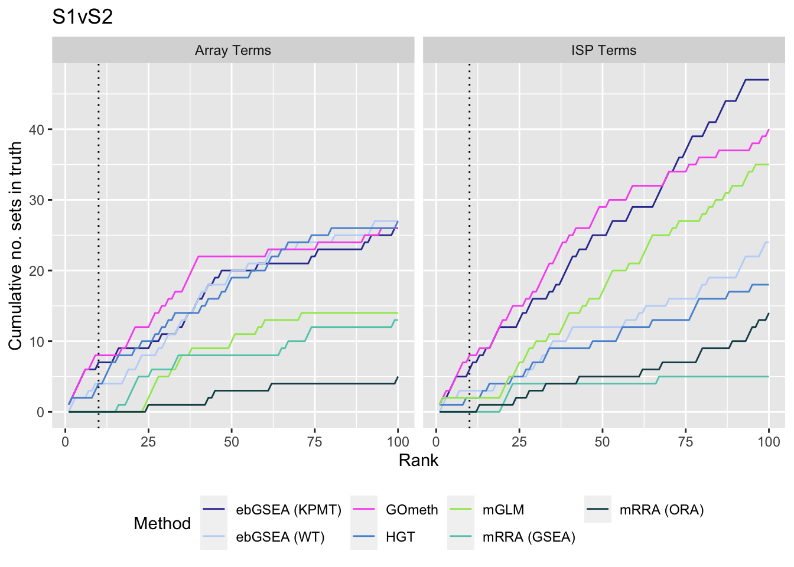
| Version | Author | Date |
|---|---|---|
| 9029ba4 | Jovana Maksimovic | 2021-04-02 |
We also examine results when top ranked 100 GO terms from RNA-seq analysis of the same cell type comparisons is used as "truth".
immuneGO <- unique(read.csv(here("data/genesets/GO-immune-system-process.txt"),
stringsAsFactors = FALSE, header = FALSE,
col.names = "GOID"))
rnaseqGO <- readRDS(here("data/cache-rnaseq/RNAseq-GSE45460-GO.rds"))
rnaseqGO %>% group_by(contrast) %>%
mutate(rank = 1:n()) %>%
filter(rank <= 100) -> topGOSets
p <- vector("list", length(unique(dat$contrast)))
for(i in 1:length(unique(dat$contrast))){
cont <- sort(unique(dat$contrast))[i]
dat %>% filter(set == "GO") %>%
filter(sub %in% c("n","c1")) %>%
filter(contrast == cont) %>%
mutate(method = unname(dict[method])) %>%
arrange(method, pvalue) %>%
group_by(method) %>%
mutate(rank = 1:n()) %>%
filter(rank <= 100) %>%
mutate(csum = cumsum(ID %in% immuneGO$GOID)) %>%
mutate(truth = "ISP Terms") -> immuneSum
dat %>% filter(set == "GO") %>%
filter(sub %in% c("n","c1")) %>%
filter(contrast == cont) %>%
mutate(method = unname(dict[method])) %>%
arrange(method, pvalue) %>%
group_by(method) %>%
mutate(rank = 1:n()) %>%
filter(rank <= 100) %>%
mutate(csum = cumsum(ID %in% topGOSets$ID[topGOSets$contrast %in%
contrast])) %>%
mutate(truth = "RNAseq Terms") -> rnaseqSum
truthSum <- bind_rows(immuneSum, rnaseqSum)
p[[i]] <- ggplot(truthSum, aes(x = rank, y = csum, colour = method)) +
geom_line() +
facet_wrap(vars(truth), ncol = 2) +
geom_vline(xintercept = 10, linetype = "dotted") +
labs(colour = "Method", x = "Rank",
y = "Cumulative no. sets in truth") +
theme(legend.position = "bottom") +
scale_color_manual(values = methodCols)
}
p[[1]] + ggtitle(sort(unique(dat$contrast))[1]) 
| Version | Author | Date |
|---|---|---|
| 9029ba4 | Jovana Maksimovic | 2021-04-02 |
p[[2]] + ggtitle(sort(unique(dat$contrast))[2])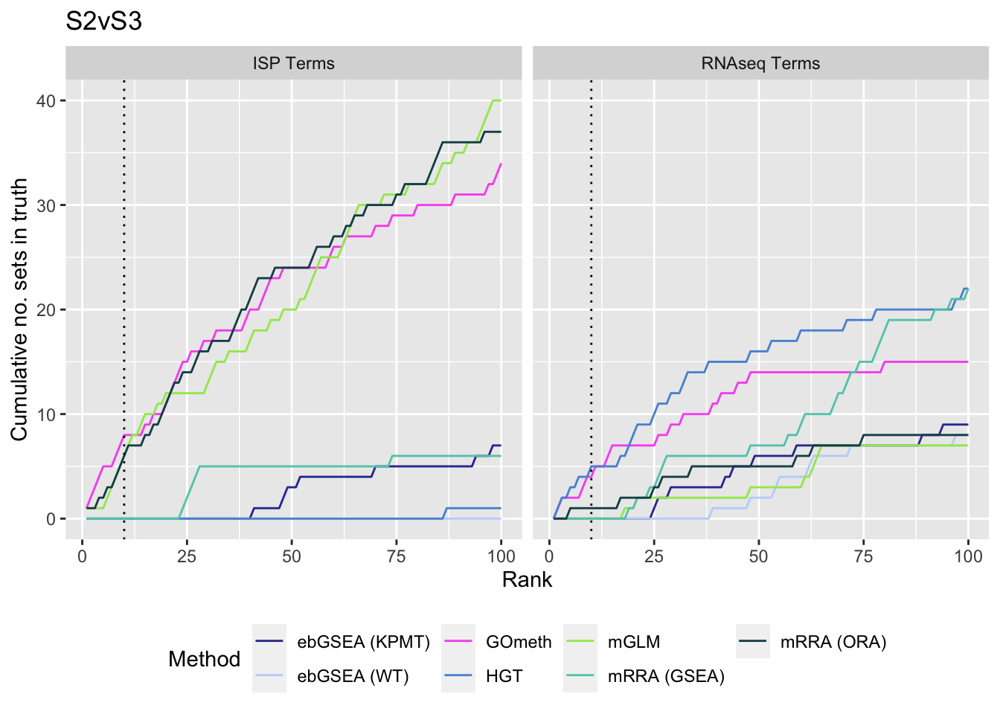
Save figure for use in manuscript.
Examine what the top 10 ranked gene sets are and how many genes they contain, for each method and comparison.
terms <- missMethyl:::.getGO()$idTable
nGenes <- rownames_to_column(data.frame(n = sapply(missMethyl:::.getGO()$idList,
length)),
var = "ID")
dat %>% filter(set == "GO") %>%
filter(sub %in% c("n","c1")) %>%
mutate(method = unname(dict[method])) %>%
arrange(contrast, method, pvalue) %>%
group_by(contrast, method) %>%
mutate(FDR = p.adjust(pvalue, method = "BH")) %>%
mutate(rank = 1:n()) %>%
filter(rank <= 10) %>%
inner_join(terms, by = c("ID" = "GOID")) %>%
inner_join(nGenes) -> subJoining, by = "ID"p <- vector("list", length(unique(sub$contrast)))
truthPal <- scales::hue_pal()(4)
names(truthPal) <- c("Both", "ISP", "Neither", "RNAseq")
for(i in 1:length(p)){
cont <- sort(unique(sub$contrast))[i]
sub %>% filter(contrast == cont) %>%
arrange(method, -rank) %>%
ungroup() %>%
mutate(idx = as.factor(1:n())) -> tmp
setLabs <- substr(tmp$TERM, 1, 40)
names(setLabs) <- tmp$idx
tmp %>% mutate(rna = ID %in% topGOSets$ID[topGOSets$contrast %in% cont],
isp = ID %in% immuneGO$GOID,
both = rna + isp,
col = ifelse(both == 2, "Both",
ifelse(both == 1 & rna == 1, "RNAseq",
ifelse(both == 1 & isp == 1,
"ISP", "Neither")))) %>%
mutate(col = factor(col,
levels = c("Both", "ISP", "RNAseq",
"Neither"))) -> tmp
p[[i]] <- ggplot(tmp, aes(x = -log10(FDR), y = idx, colour = col)) +
geom_point(aes(size = n), alpha = 0.7) +
scale_size(limits = c(min(sub$n), max(sub$n))) +
facet_wrap(vars(method), ncol = 2, scales = "free") +
scale_y_discrete(labels = setLabs) +
scale_colour_manual(values = truthPal) +
labs(y = "", size = "No. genes", colour = "In truth set") +
theme(axis.text.y = element_text(size = 6),
axis.text.x = element_text(size = 6),
legend.box = "horizontal",
legend.margin = margin(0, 0, 0, 0, unit = "lines"),
panel.spacing.x = unit(1, "lines")) +
coord_cartesian(xlim = c(-log10(0.99), -log10(10^-80))) +
geom_vline(xintercept = -log10(0.05), linetype = "dashed") +
ggtitle(cont)
}
shift_legend(p[[1]], plot = TRUE, pos = "left")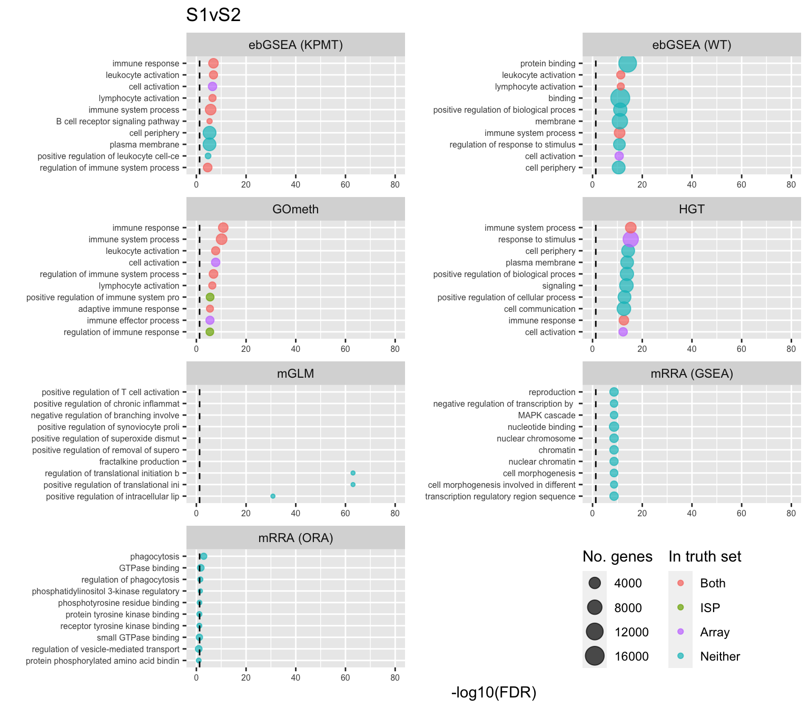
shift_legend(p[[2]], plot = TRUE, pos = "left")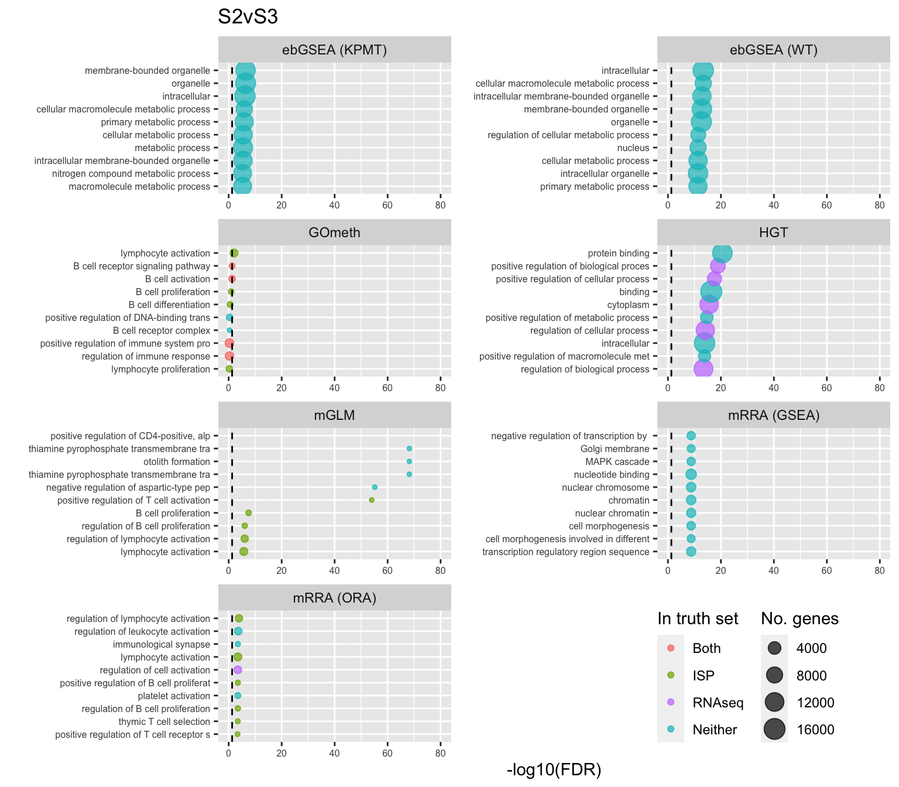
Save figure for use in manuscript.
fig <- here("output/figures/Fig-4D.rds")
saveRDS(shift_legend(p[[1]] + theme(plot.title = element_blank()),
pos = "left"),
fig, compress = FALSE)
fig <- here("output/figures/SFig-5B.rds")
saveRDS(shift_legend(p[[2]] + theme(plot.title = element_blank()),
pos = "left"),
fig, compress = FALSE)P-value histograms for the different methods for all contrasts on GO categories.
dat %>% filter(set == "GO") %>%
filter(sub %in% c("n","c1")) %>%
mutate(method = unname(dict[method])) -> subDat
ggplot(subDat, aes(pvalue, fill = method)) +
geom_histogram(binwidth = 0.025) +
facet_grid(cols = vars(contrast), rows = vars(method)) +
theme(legend.position = "bottom") +
labs(x = "P-value", y = "Frequency", fill = "Method") +
scale_fill_manual(values = methodCols)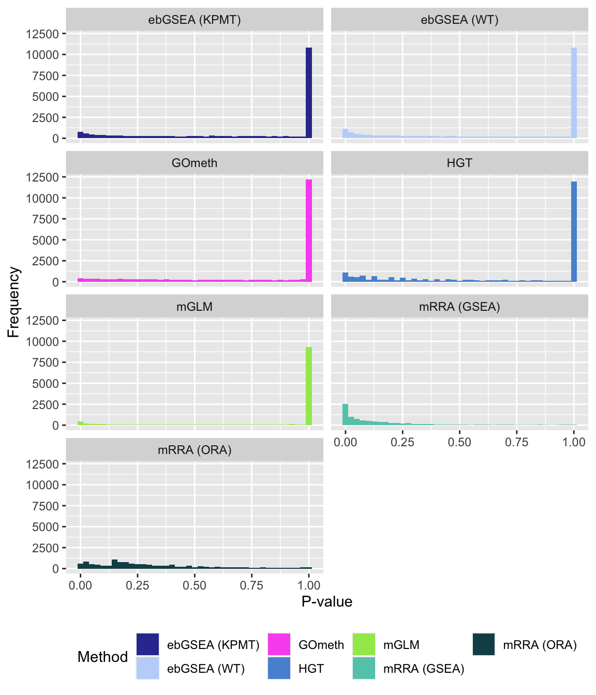
Compare GOmeth results using different DM CpG significance cutoffs
As the results of GOmeth depend on the list of significant CpGs provided as input to the function, we explored the effect of selecting "significant" CpGs in different ways on the gene set testing performance of GOmeth.
dat %>% filter(set == "GO") %>%
filter(grepl("mmethyl", method)) %>%
mutate(method = unname(dict[method])) %>%
arrange(contrast, method, pvalue) %>%
group_by(contrast, method, sub) %>%
mutate(csum = cumsum(ID %in% immuneGO$GOID)) %>%
mutate(rank = 1:n()) %>%
mutate(cut = ifelse(sub == "c1", "Top 5000",
ifelse(sub == "c2", "Top 10000",
ifelse(sub == "p1", "FDR < 0.01", "FDR < 0.05")))) %>%
filter(rank <= 100) -> sub
p <- ggplot(sub, aes(x = rank, y = csum, colour = cut)) +
geom_line() +
facet_wrap(vars(contrast, method), ncol=2, nrow = 3, scales = "free") +
geom_vline(xintercept = 10, linetype = "dotted") +
labs(colour = "Sig. select", x = "Rank", y = "Cumulative no. immune sets") +
theme(legend.position = "bottom")
p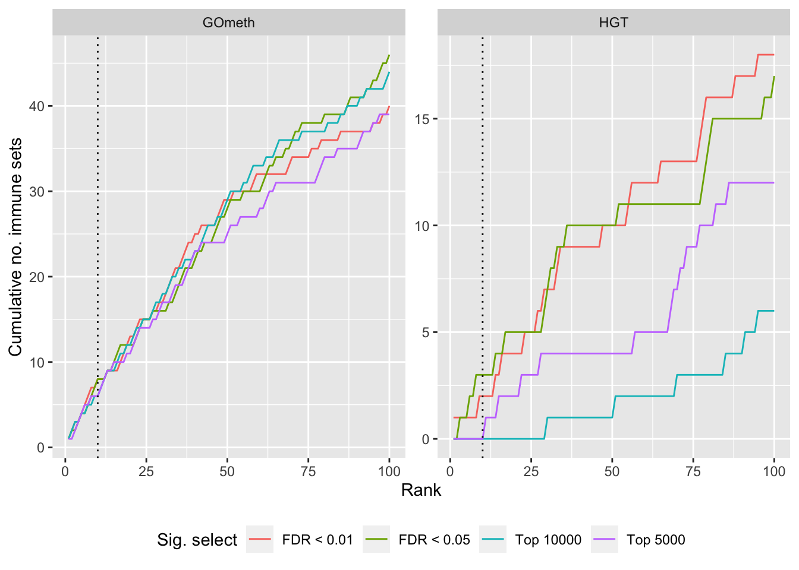
| Version | Author | Date |
|---|---|---|
| 9029ba4 | Jovana Maksimovic | 2021-04-02 |
dat %>% filter(set == "GO") %>%
filter(grepl("mmethyl", method)) %>%
mutate(method = unname(dict[method])) %>%
arrange(contrast, method, pvalue) %>%
group_by(contrast, method, sub) %>%
mutate(csum = cumsum(ID %in% topGOSets$ID[topGOSets$contrast %in%
contrast])) %>%
mutate(rank = 1:n()) %>%
mutate(cut = ifelse(sub == "c1", "Top 5000",
ifelse(sub == "c2", "Top 10000",
ifelse(sub == "p1", "FDR < 0.01", "FDR < 0.05")))) %>%
filter(rank <= 100) -> sub
p <- ggplot(sub, aes(x = rank, y = csum, colour = cut)) +
geom_line() +
facet_wrap(vars(contrast, method), ncol=2, nrow = 3, scales = "free") +
geom_vline(xintercept = 10, linetype = "dotted") +
labs(colour = "Sig. select", x = "Rank",
y = glue("Cumulative no. RNAseq sets")) +
theme(legend.position = "bottom")
p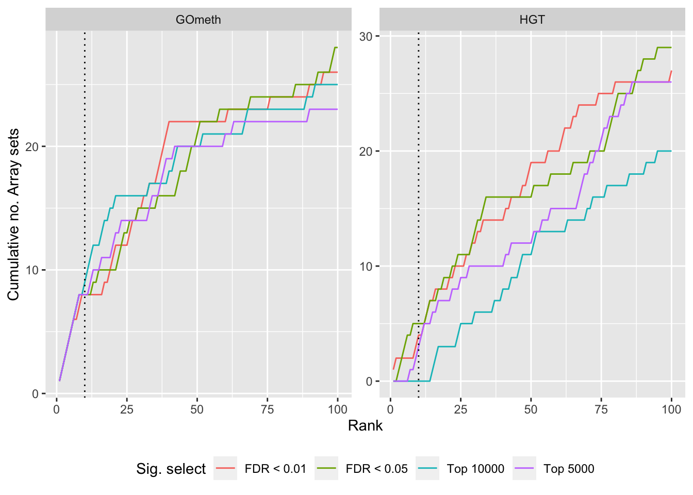
| Version | Author | Date |
|---|---|---|
| 9029ba4 | Jovana Maksimovic | 2021-04-02 |
KEGG pathways
Now test KEGG pathways with at least 5 genes and 5000 at most.
Again, as we are comparing immune cells we expect pathways from the following categories to be highly ranked: Immune system, Immune disease, Signal transduction, Signaling molecules and interaction; https://www.genome.jp/kegg/pathway.html.
immuneKEGG <- read.csv(here("data/genesets/kegg-immune-related-pathways.csv"),
stringsAsFactors = FALSE, header = FALSE,
col.names = c("ID","pathway"))
immuneKEGG$PID <- paste0("path:hsa0",immuneKEGG$ID)
dat %>% filter(set == "KEGG") %>%
filter(sub %in% c("n","c1")) %>%
mutate(method = unname(dict[method])) %>%
arrange(contrast, method, pvalue) %>%
group_by(contrast, method) %>%
mutate(csum = cumsum(ID %in% immuneKEGG$PID)) %>%
mutate(rank = 1:n()) %>%
filter(rank <= 100) -> sub
p1 <- ggplot(sub, aes(x = rank, y = csum, colour = method)) +
geom_line() +
facet_wrap(vars(contrast), ncol=3) +
geom_vline(xintercept = 10, linetype = "dotted") +
labs(colour = "Method", x = "Rank", y = "Cumulative no. immune sets") +
theme(legend.position = "bottom") +
scale_color_manual(values = methodCols)Examine results when top ranked 100 KEGG pathways from RNA-seq analysis of the same cell type comparisons is used as "truth".
rnaseqKEGG <- readRDS(here("data/cache-rnaseq/RNAseq-GSE45460-KEGG.rds"))
rnaseqKEGG %>% group_by(contrast) %>%
mutate(rank = 1:n()) %>%
filter(rank <= 100) -> topKEGG
dat %>% filter(set == "KEGG") %>%
filter(sub %in% c("n","c1")) %>%
mutate(method = unname(dict[method])) %>%
arrange(contrast, method, pvalue) %>%
group_by(contrast, method) %>%
mutate(csum = cumsum(ID %in% topKEGG$PID[topKEGG$contrast %in% contrast])) %>%
mutate(rank = 1:n()) %>%
filter(rank <= 100) -> sub
p2 <- ggplot(sub, aes(x = rank, y = csum, colour = method)) +
geom_line() +
facet_wrap(vars(contrast), ncol=3, scales = "free_y") +
geom_vline(xintercept = 10, linetype = "dotted") +
labs(colour = "Method", x = "Rank", y = "Cumulative no. RNAseq sets") +
theme(legend.position = "bottom") +
scale_color_manual(values = methodCols)
p3 <- p1 / p2 +
plot_layout(guides = "collect") &
theme(legend.position = "bottom")
p3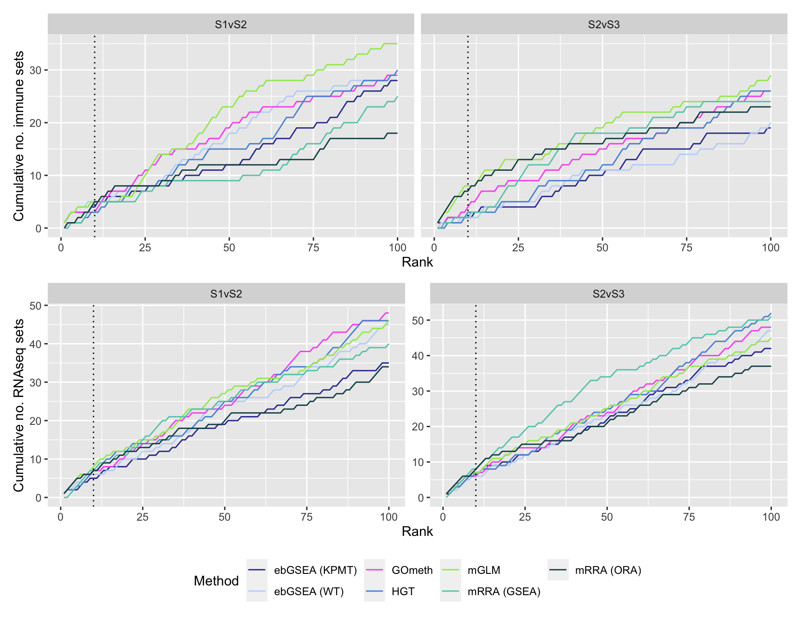
Save figure for use in manuscript.
fig <- here("output/figures/SFig-7A.rds")
saveRDS(p1, fig, compress = FALSE)
fig <- here("output/figures/SFig-7B.rds")
saveRDS(p2, fig, compress = FALSE)Examine what the top 10 ranked gene sets are and how many genes they contain, for each method and comparison.
terms <- missMethyl:::.getKEGG()$idTable
nGenes <- rownames_to_column(data.frame(n = sapply(missMethyl:::.getKEGG()$idList,
length)),
var = "ID")
dat %>% filter(set == "KEGG") %>%
filter(sub %in% c("n","c1")) %>%
mutate(method = unname(dict[method])) %>%
arrange(contrast, method, pvalue) %>%
group_by(contrast, method) %>%
mutate(FDR = p.adjust(pvalue, method = "BH")) %>%
mutate(rank = 1:n()) %>%
filter(rank <= 10) %>%
inner_join(terms, by = c("ID" = "PathwayID")) %>%
inner_join(nGenes) -> subJoining, by = "ID"p <- vector("list", length(unique(sub$contrast)))
for(i in 1:length(p)){
cont <- sort(unique(sub$contrast))[i]
sub %>% filter(contrast == cont) %>%
arrange(method, -rank) %>%
ungroup() %>%
mutate(idx = as.factor(1:n())) -> tmp
setLabs <- substr(tmp$Description, 1, 40)
names(setLabs) <- tmp$idx
tmp %>% mutate(rna = ID %in% topKEGG$PID[topKEGG$contrast %in% cont],
isp = ID %in% immuneKEGG$PID,
both = rna + isp,
col = ifelse(both == 2, "Both",
ifelse(both == 1 & rna == 1, "RNAseq",
ifelse(both == 1 & isp == 1,
"ISP", "Neither")))) %>%
mutate(col = factor(col,
levels = c("Both", "ISP", "RNAseq",
"Neither"))) -> tmp
p[[i]] <- ggplot(tmp, aes(x = -log10(FDR), y = idx, colour = col)) +
geom_point(aes(size = n), alpha = 0.7) +
scale_size(limits = c(min(sub$n), max(sub$n))) +
facet_wrap(vars(method), ncol = 2, scales = "free") +
scale_y_discrete(labels = setLabs) +
scale_colour_manual(values = truthPal) +
labs(y = "", size = "No. genes", colour = "In truth set") +
theme(axis.text.y = element_text(size = 6),
axis.text.x = element_text(size = 6),
legend.box = "horizontal",
legend.margin = margin(0, 0, 0, 0, unit = "lines"),
panel.spacing.x = unit(1, "lines")) +
coord_cartesian(xlim = c(-log10(0.99), -log10(10^-80))) +
geom_vline(xintercept = -log10(0.05), linetype = "dashed") +
ggtitle(cont)
}
shift_legend(p[[1]], plot = TRUE, pos = "left")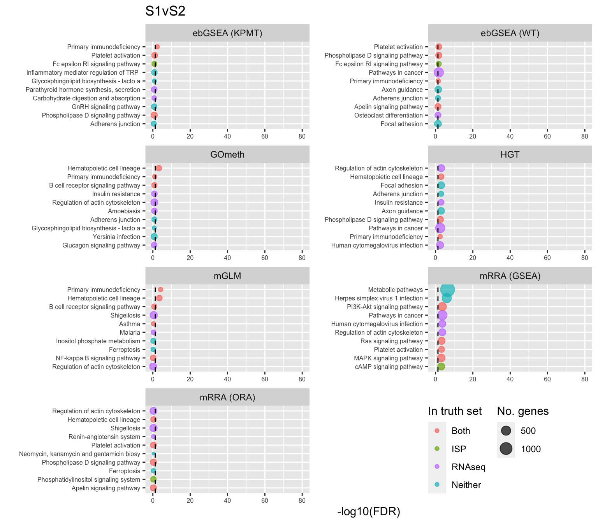
| Version | Author | Date |
|---|---|---|
| 9029ba4 | Jovana Maksimovic | 2021-04-02 |
shift_legend(p[[2]], plot = TRUE, pos = "left")
Save figure for use in manuscript.
fig <- here("output/figures/SFig-7C.rds")
saveRDS(shift_legend(p[[1]] + theme(plot.title = element_blank()),
pos = "left"),
fig, compress = FALSE)
fig <- here("output/figures/SFig-7D.rds")
saveRDS(shift_legend(p[[2]] + theme(plot.title = element_blank()),
pos = "left"),
fig, compress = FALSE)P-value histograms for the different methods for all contrasts on KEGG pathways.
dat %>% filter(set == "KEGG") %>%
filter(sub %in% c("n","c1")) %>%
mutate(method = unname(dict[method])) -> subDat
ggplot(subDat, aes(pvalue, fill = method)) +
geom_histogram(binwidth = 0.025) +
facet_grid(cols = vars(contrast), rows = vars(method)) +
theme(legend.position = "bottom") +
labs(x = "P-value", y = "Frequency", fill = "Method") +
scale_fill_manual(values = methodCols)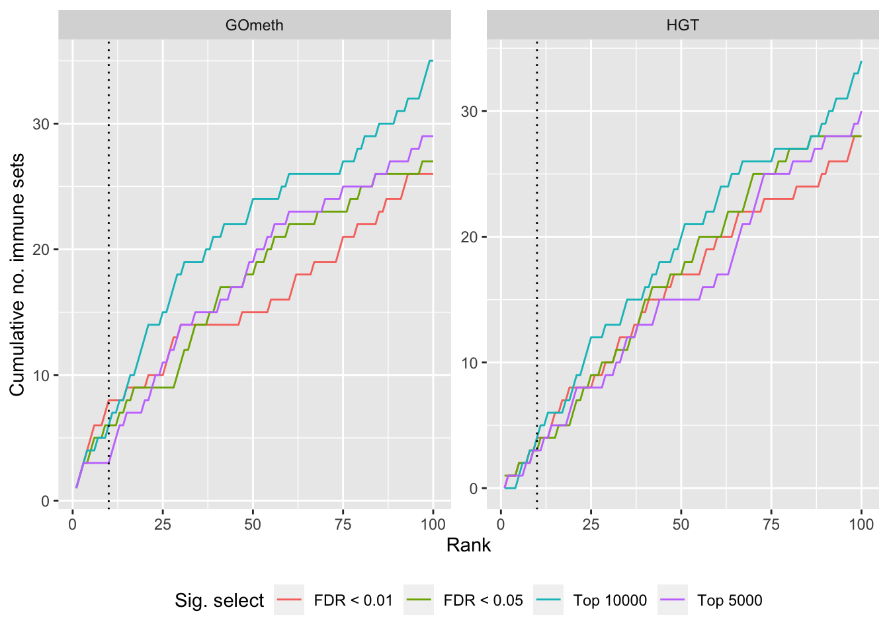
| Version | Author | Date |
|---|---|---|
| 9029ba4 | Jovana Maksimovic | 2021-04-02 |
Compare GOmeth results using different DM CpG significance cutoffs
As the results of GOmeth depend on the list of significant CpGs provided as input to the function, we explored the effect of selecting "significant" CpGs in different ways on the gene set testing performance of GOmeth.
dat %>% filter(set == "KEGG") %>%
filter(grepl("mmethyl", method)) %>%
mutate(method = unname(dict[method])) %>%
arrange(contrast, method, pvalue) %>%
group_by(contrast, method, sub) %>%
mutate(csum = cumsum(ID %in% immuneKEGG$PID)) %>%
mutate(rank = 1:n()) %>%
mutate(cut = ifelse(sub == "c1", "Top 5000",
ifelse(sub == "c2", "Top 10000",
ifelse(sub == "p1", "FDR < 0.01", "FDR < 0.05")))) %>%
filter(rank <= 100) -> sub
p <- ggplot(sub, aes(x = rank, y = csum, colour = cut)) +
geom_line() +
facet_wrap(vars(contrast, method), ncol=2, nrow = 3, scales = "free") +
geom_vline(xintercept = 10, linetype = "dotted") +
labs(colour = "Sig. select", x = "Rank", y = "Cumulative no. immune sets") +
theme(legend.position = "bottom")
p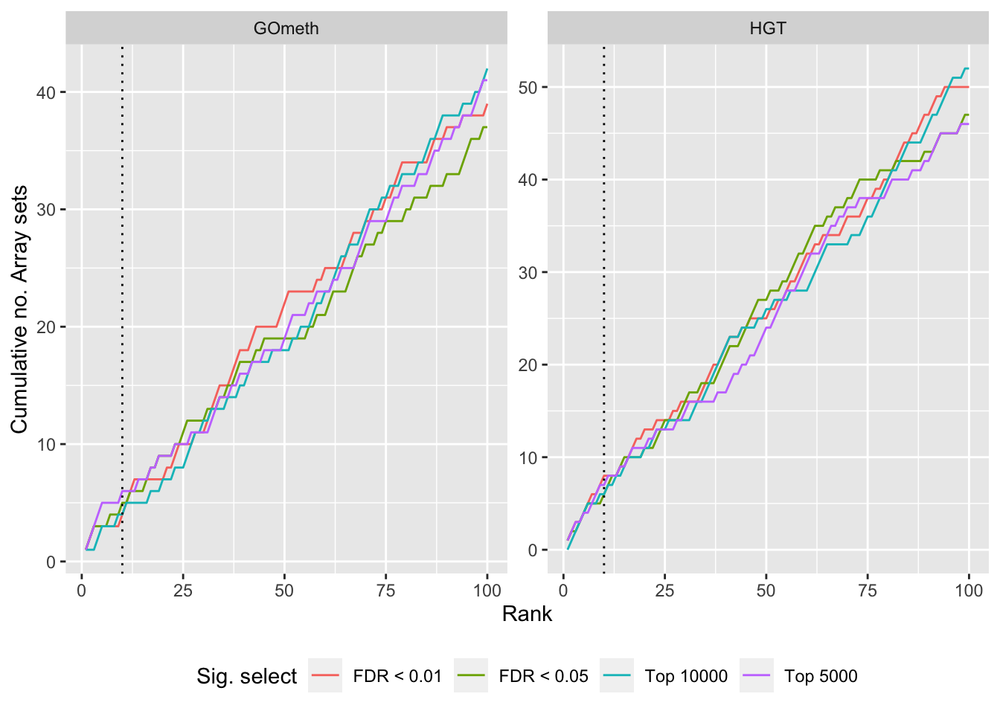
dat %>% filter(set == "KEGG") %>%
filter(grepl("mmethyl", method)) %>%
mutate(method = unname(dict[method])) %>%
arrange(contrast, method, pvalue) %>%
group_by(contrast, method, sub) %>%
mutate(csum = cumsum(ID %in% topKEGG$PID[topKEGG$contrast %in% contrast])) %>%
mutate(rank = 1:n()) %>%
mutate(cut = ifelse(sub == "c1", "Top 5000",
ifelse(sub == "c2", "Top 10000",
ifelse(sub == "p1", "FDR < 0.01", "FDR < 0.05")))) %>%
filter(rank <= 100) -> sub
p <- ggplot(sub, aes(x = rank, y = csum, colour = cut)) +
geom_line() +
facet_wrap(vars(contrast, method), ncol=2, nrow = 3, scales = "free") +
geom_vline(xintercept = 10, linetype = "dotted") +
labs(colour = "Sig. select", x = "Rank",
y = glue("Cumulative no. RNAseq sets")) +
theme(legend.position = "bottom")
p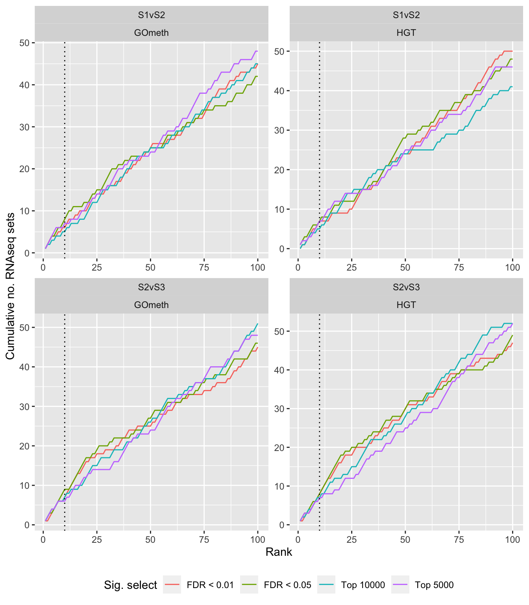
BROAD gene sets
As the ebGSEA method from the ChAMP package only allows testing of their in-built database of Broad Institute gene sets, we will compare to other methods by testing these same gene sets. Using the top 100 ranked gene sets as identified by Belinda's gsaseq analysis of the corresponding RNAseq data as "truth".
rnaseqBROAD <- readRDS(here("data/cache-rnaseq/RNAseq-GSE45460-BROAD-GSA.rds"))
rnaseqBROAD %>% group_by(contrast) %>%
mutate(rank = 1:n()) %>%
filter(rank <= 100) -> topBROAD
p <- vector("list", length(unique(dat$contrast)))
for(i in 1:length(unique(dat$contrast))){
cont <- sort(unique(dat$contrast))[i]
dat %>% filter(set == "BROAD") %>%
filter(sub %in% c("n","c1")) %>%
filter(contrast == cont) %>%
mutate(method = unname(dict[method])) %>%
arrange(contrast, method, pvalue) %>%
group_by(contrast, method) %>%
mutate(csum = cumsum(ID %in% topBROAD$ID[topBROAD$contrast %in% contrast])) %>%
mutate(rank = 1:n()) %>%
filter(rank <= 100) -> sub
p[[i]] <- ggplot(sub, aes(x = rank, y = csum, colour = method)) +
geom_line() +
geom_vline(xintercept = 10, linetype = "dotted") +
labs(colour = "Method", x = "Rank", y = "Cumulative no. RNAseq sets") +
theme(legend.position = "bottom") +
scale_color_manual(values = methodCols) +
ggtitle(cont)
}
p[[1]]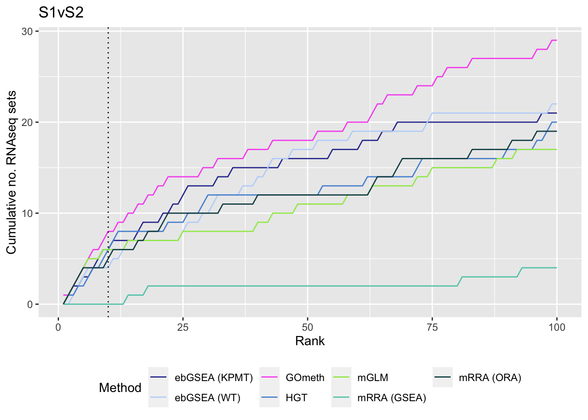
| Version | Author | Date |
|---|---|---|
| 9029ba4 | Jovana Maksimovic | 2021-04-02 |
p[[2]]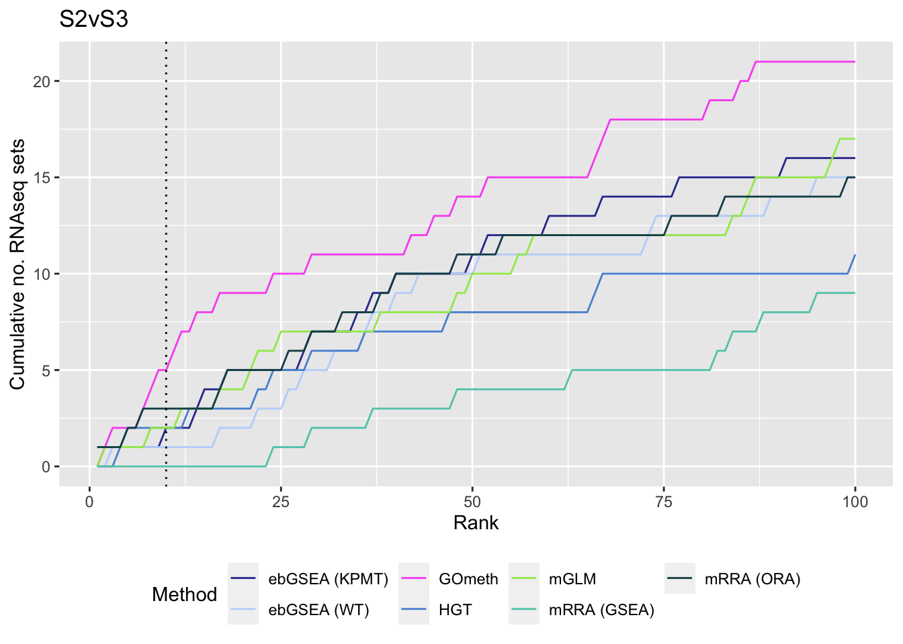
| Version | Author | Date |
|---|---|---|
| 9029ba4 | Jovana Maksimovic | 2021-04-02 |
Save figure for use in manuscript.
fig <- here("output/figures/SFig-8A.rds")
saveRDS(p[[1]], fig, compress = FALSE)
fig <- here("output/figures/SFig-9A.rds")
saveRDS(p[[2]], fig, compress = FALSE)Examine what the top 10 ranked gene sets are and how many genes they contain, for each method and comparison.
data(PathwayList)
nGenes <- rownames_to_column(data.frame(n = sapply(PathwayList,
length)),
var = "ID")
dat %>% filter(set == "BROAD") %>%
filter(sub %in% c("n","c1")) %>%
mutate(method = unname(dict[method])) %>%
arrange(contrast, method, pvalue) %>%
group_by(contrast, method) %>%
mutate(FDR = p.adjust(pvalue, method = "BH")) %>%
mutate(rank = 1:n()) %>%
filter(rank <= 10) %>%
inner_join(nGenes) -> subJoining, by = "ID"truthPal <- scales::hue_pal()(4)[3:4]
names(truthPal) <- c("None", "RNAseq")
p <- vector("list", length(unique(sub$contrast)))
for(i in 1:length(p)){
cont <- sort(unique(sub$contrast))[i]
sub %>% filter(contrast == cont) %>%
arrange(method, -rank) %>%
ungroup() %>%
mutate(idx = as.factor(1:n())) -> tmp
setLabs <- substr(tmp$ID, 1, 30)
names(setLabs) <- tmp$idx
tmp %>% mutate(rna = ID %in% topBROAD$ID[topGOSets$contrast %in% cont],
col = ifelse(rna == 1, "RNAseq", "None")) %>%
mutate(col = factor(col, levels = c("RNAseq", "None"))) -> tmp
p[[i]] <- ggplot(tmp, aes(x = -log10(FDR), y = idx, colour = col)) +
geom_point(aes(size = n), alpha = 0.7) +
scale_size(limits = c(min(sub$n), max(sub$n))) +
facet_wrap(vars(method), ncol = 2, scales = "free") +
scale_y_discrete(labels = setLabs) +
scale_color_manual(values = truthPal) +
labs(y = "", size = "No. genes", colour = "In truth set") +
theme(axis.text.y = element_text(size = 6),
axis.text.x = element_text(size = 6),
legend.box = "horizontal",
legend.margin = margin(0, 0, 0, 0, unit = "lines"),
panel.spacing.x = unit(1, "lines")) +
coord_cartesian(xlim = c(-log10(0.99), -log10(10^-100))) +
geom_vline(xintercept = -log10(0.05), linetype = "dashed") +
ggtitle(cont)
}
shift_legend(p[[1]], plot = TRUE, pos = "left")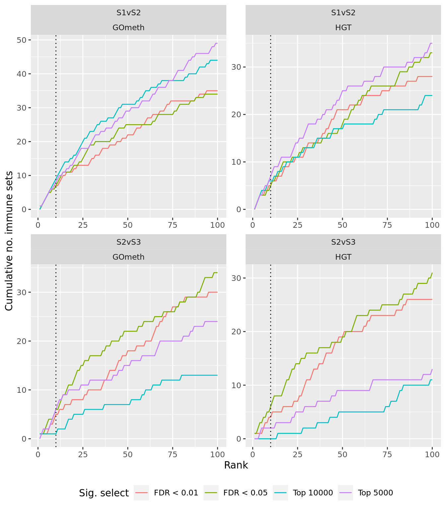
| Version | Author | Date |
|---|---|---|
| 9029ba4 | Jovana Maksimovic | 2021-04-02 |
shift_legend(p[[2]], plot = TRUE, pos = "left")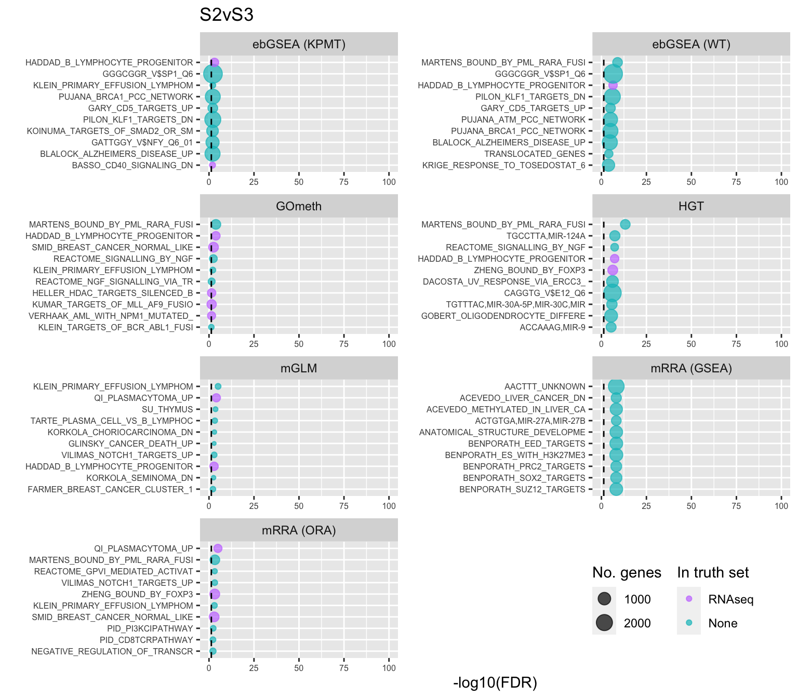
Save figure for use in manuscript.
fig <- here("output/figures/SFig-8B.rds")
saveRDS(shift_legend(p[[1]] + theme(plot.title = element_blank()),
pos = "left"),
fig, compress = FALSE)
fig <- here("output/figures/SFig-9B.rds")
saveRDS(shift_legend(p[[2]] + theme(plot.title = element_blank()),
pos = "left"),
fig, compress = FALSE)P-value histograms for the different methods for all contrasts on BROAD gene sets.
dat %>% filter(set == "BROAD") %>%
filter(sub %in% c("n","c1")) %>%
mutate(method = unname(dict[method])) -> subDat
ggplot(subDat, aes(pvalue, fill = method)) +
geom_histogram(binwidth = 0.025) +
facet_grid(cols = vars(contrast), rows = vars(method)) +
theme(legend.position = "bottom") +
labs(x = "P-value", y = "Frequency", fill = "Method") +
scale_fill_manual(values = methodCols)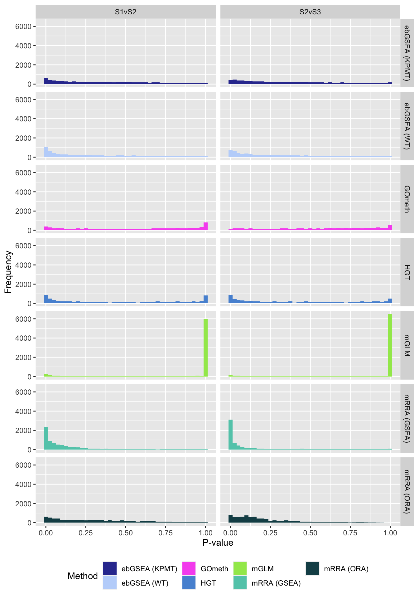
Compare GOmeth results using different DM CpG significance cutoffs
As the results of GOmeth depend on the list of significant CpGs provided as input to the function, we explored the effect of selecting "significant" CpGs in different ways on the gene set testing performance of GOmeth.
dat %>% filter(set == "BROAD") %>%
filter(grepl("mmethyl", method)) %>%
mutate(method = unname(dict[method])) %>%
arrange(contrast, method, pvalue) %>%
group_by(contrast, method, sub) %>%
mutate(csum = cumsum(ID %in% topBROAD$ID)) %>%
mutate(rank = 1:n()) %>%
mutate(cut = ifelse(sub == "c1", "Top 5000",
ifelse(sub == "c2", "Top 10000",
ifelse(sub == "p1", "FDR < 0.01", "FDR < 0.05")))) %>%
filter(rank <= 100) -> sub
p <- ggplot(sub, aes(x = rank, y = csum, colour = cut)) +
geom_line() +
facet_wrap(vars(contrast, method), ncol=2, nrow = 3, scales = "free") +
geom_vline(xintercept = 10, linetype = "dotted") +
labs(colour = "Sig. select", x = "Rank", y = "Cumulative no. immune sets") +
theme(legend.position = "bottom")
p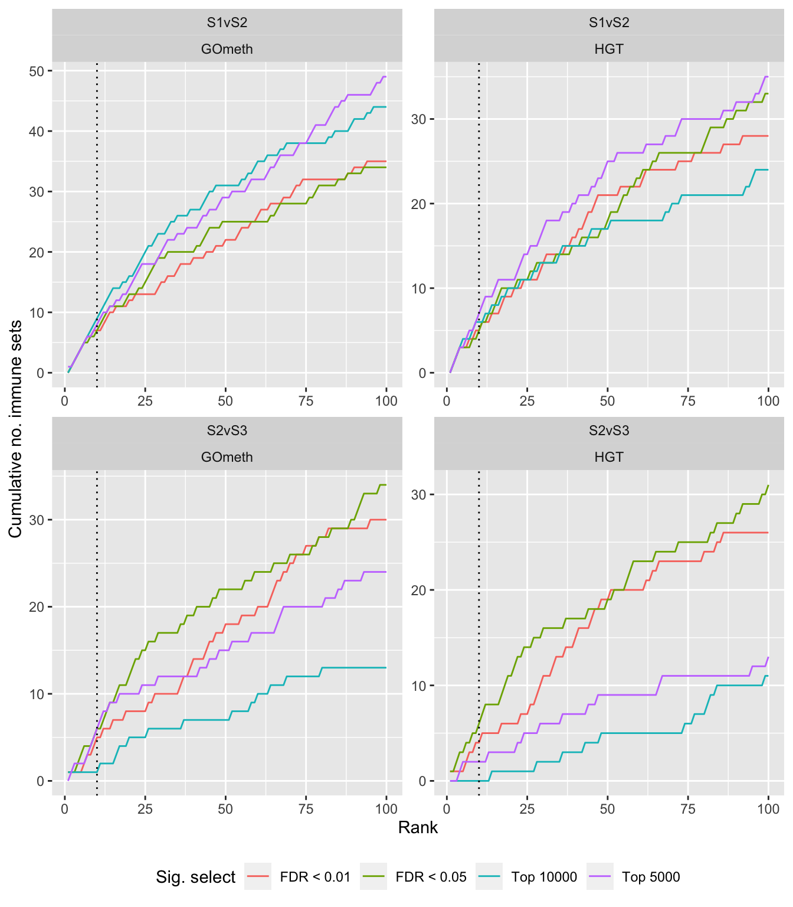
dat %>% filter(set == "BROAD") %>%
filter(grepl("mmethyl", method)) %>%
mutate(method = unname(dict[method])) %>%
arrange(contrast, method, pvalue) %>%
group_by(contrast, method, sub) %>%
mutate(csum = cumsum(ID %in% topBROAD$ID)) %>%
mutate(rank = 1:n()) %>%
mutate(cut = ifelse(sub == "c1", "Top 5000",
ifelse(sub == "c2", "Top 10000",
ifelse(sub == "p1", "FDR < 0.01", "FDR < 0.05")))) %>%
filter(rank <= 100) -> sub
p <- ggplot(sub, aes(x = rank, y = csum, colour = cut)) +
geom_line() +
facet_wrap(vars(contrast, method), ncol=2, nrow = 3, scales = "free") +
geom_vline(xintercept = 10, linetype = "dotted") +
labs(colour = "Sig. select", x = "Rank", y = "Cumulative no. immune sets") +
theme(legend.position = "bottom")
p
sessionInfo()R version 4.0.3 (2020-10-10)
Platform: x86_64-apple-darwin17.0 (64-bit)
Running under: macOS Mojave 10.14.6
Matrix products: default
BLAS: /Library/Frameworks/R.framework/Versions/4.0/Resources/lib/libRblas.dylib
LAPACK: /Library/Frameworks/R.framework/Versions/4.0/Resources/lib/libRlapack.dylib
locale:
[1] en_AU.UTF-8/en_AU.UTF-8/en_AU.UTF-8/C/en_AU.UTF-8/en_AU.UTF-8
attached base packages:
[1] grid stats4 parallel stats graphics grDevices utils
[8] datasets methods base
other attached packages:
[1] lemon_0.4.5
[2] ChAMPdata_2.22.0
[3] patchwork_1.1.1
[4] rbin_0.2.0
[5] forcats_0.5.1
[6] stringr_1.4.0
[7] dplyr_1.0.5
[8] purrr_0.3.4
[9] readr_1.4.0
[10] tidyr_1.1.3
[11] tibble_3.1.0
[12] tidyverse_1.3.0
[13] glue_1.4.2
[14] ggplot2_3.3.3
[15] missMethyl_1.24.0
[16] IlluminaHumanMethylationEPICanno.ilm10b4.hg19_0.6.0
[17] IlluminaHumanMethylation450kanno.ilmn12.hg19_0.6.0
[18] gridExtra_2.3
[19] reshape2_1.4.4
[20] BiocParallel_1.24.1
[21] limma_3.46.0
[22] paletteer_1.3.0
[23] minfi_1.36.0
[24] bumphunter_1.32.0
[25] locfit_1.5-9.4
[26] iterators_1.0.13
[27] foreach_1.5.1
[28] Biostrings_2.58.0
[29] XVector_0.30.0
[30] SummarizedExperiment_1.20.0
[31] Biobase_2.50.0
[32] MatrixGenerics_1.2.1
[33] matrixStats_0.58.0
[34] GenomicRanges_1.42.0
[35] GenomeInfoDb_1.26.4
[36] IRanges_2.24.1
[37] S4Vectors_0.28.1
[38] BiocGenerics_0.36.0
[39] here_1.0.1
[40] workflowr_1.6.2
loaded via a namespace (and not attached):
[1] readxl_1.3.1 backports_1.2.1
[3] BiocFileCache_1.14.0 plyr_1.8.6
[5] splines_4.0.3 digest_0.6.27
[7] htmltools_0.5.1.1 GO.db_3.12.1
[9] fansi_0.4.2 magrittr_2.0.1
[11] memoise_2.0.0 annotate_1.68.0
[13] modelr_0.1.8 askpass_1.1
[15] siggenes_1.64.0 prettyunits_1.1.1
[17] colorspace_2.0-0 rvest_1.0.0
[19] blob_1.2.1 rappdirs_0.3.3
[21] haven_2.3.1 xfun_0.22
[23] crayon_1.4.1 RCurl_1.98-1.3
[25] jsonlite_1.7.2 genefilter_1.72.1
[27] GEOquery_2.58.0 survival_3.2-10
[29] gtable_0.3.0 zlibbioc_1.36.0
[31] DelayedArray_0.16.3 Rhdf5lib_1.12.1
[33] HDF5Array_1.18.1 scales_1.1.1
[35] DBI_1.1.1 rngtools_1.5
[37] Rcpp_1.0.6 xtable_1.8-4
[39] progress_1.2.2 bit_4.0.4
[41] mclust_5.4.7 preprocessCore_1.52.1
[43] httr_1.4.2 RColorBrewer_1.1-2
[45] ellipsis_0.3.1 farver_2.1.0
[47] pkgconfig_2.0.3 reshape_0.8.8
[49] XML_3.99-0.6 sass_0.3.1
[51] dbplyr_2.1.0 utf8_1.2.1
[53] labeling_0.4.2 tidyselect_1.1.0
[55] rlang_0.4.10 later_1.1.0.1
[57] AnnotationDbi_1.52.0 cellranger_1.1.0
[59] munsell_0.5.0 tools_4.0.3
[61] cachem_1.0.4 cli_2.3.1
[63] generics_0.1.0 RSQLite_2.2.5
[65] broom_0.7.5 evaluate_0.14
[67] fastmap_1.1.0 yaml_2.2.1
[69] rematch2_2.1.2 org.Hs.eg.db_3.12.0
[71] knitr_1.31 bit64_4.0.5
[73] fs_1.5.0 beanplot_1.2
[75] scrime_1.3.5 nlme_3.1-152
[77] doRNG_1.8.2 sparseMatrixStats_1.2.1
[79] whisker_0.4 nor1mix_1.3-0
[81] xml2_1.3.2 biomaRt_2.46.3
[83] rstudioapi_0.13 compiler_4.0.3
[85] curl_4.3 reprex_1.0.0
[87] statmod_1.4.35 bslib_0.2.4
[89] stringi_1.5.3 highr_0.8
[91] GenomicFeatures_1.42.2 lattice_0.20-41
[93] Matrix_1.3-2 multtest_2.46.0
[95] vctrs_0.3.7 pillar_1.5.1
[97] lifecycle_1.0.0 rhdf5filters_1.2.0
[99] jquerylib_0.1.3 cowplot_1.1.1
[101] data.table_1.14.0 bitops_1.0-6
[103] httpuv_1.5.5 rtracklayer_1.50.0
[105] R6_2.5.0 promises_1.2.0.1
[107] codetools_0.2-18 MASS_7.3-53.1
[109] assertthat_0.2.1 rhdf5_2.34.0
[111] openssl_1.4.3 rprojroot_2.0.2
[113] withr_2.4.1 GenomicAlignments_1.26.0
[115] Rsamtools_2.6.0 GenomeInfoDbData_1.2.4
[117] mgcv_1.8-34 hms_1.0.0
[119] quadprog_1.5-8 base64_2.0
[121] rmarkdown_2.7 DelayedMatrixStats_1.12.3
[123] illuminaio_0.32.0 git2r_0.28.0
[125] lubridate_1.7.10